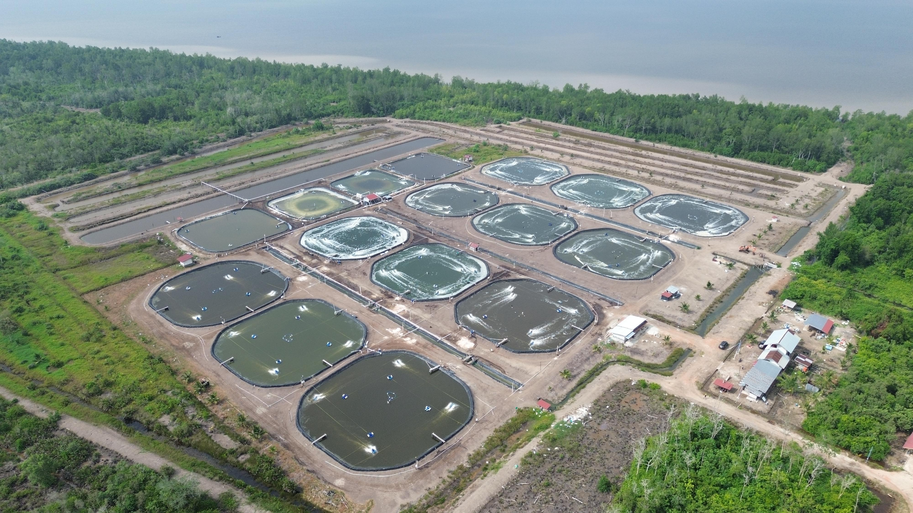

Teknologi budidaya
Lima tahap perubahan, dari kolam tanah sampai sterilisasi UV, dalam urutan seperti yang diceritakan pemilik.
-
Kolam tanah dan kincir air
Titik awal usaha ini. Budidaya konvensional memakai kolam tanah (pond), dengan kincir air sebagai aerator. Kolam tanah rawan cemaran yang menurunkan kualitas air.
-
Kolam terpal HDPE
Kolam dilapisi terpal HDPE sehingga terisolasi. Air jadi lebih steril dan bersih, dan parameternya tidak mudah terganggu oleh pengaruh dari luar. Pemilik menyebut perubahan ini sangat krusial.
Dokumentasi konstruksi sisi kolam berlapis terpal HDPE
-
Aerasi baru dan probiotik
Kincir diganti root blower, lalu Venturi technology fan pack. Venturi menghasilkan gelembung udara jauh lebih kecil, sehingga kadar oksigen dalam air bisa naik. Pada tahap ini probiotik juga mulai dipakai, dan terus diperbarui karena teknologinya cepat berkembang.
Sistem aerasi aktif di kolam budidaya
-
Treatment pond & kapasitas pengolahan
Cemaran di perairan makin banyak, jadi ditambahkan treatment pond, yaitu kolam pengolahan air, sebagai tahap filterisasi sebelum air dialirkan ke kolam budidaya.
Kapasitas terpasang saat ini mencakup:
- Water treatment: 8 pond × 5.000 m³ per pond = 40.000 m³.
- Treat pond: 4 kolam × 1.800 m³ = 7.200 m³ air.
- Production pond: 12 kolam × 1.900 m³ = 22.800 m³.
- Waste water treatment (IPAL): Instalasi Pengolahan Air Limbah dialokasikan kisaran 20% dari total areal 20 ha yang digunakan untuk proses budidaya dan treatment air.

Instalasi kolam water treatment & kolam produksi
-
Sterilisasi UV dan filter bertingkat
Tahap terbaru: sterilisasi air dengan sinar ultraviolet dan multi-grade filter, bersama sand filter dan filter karbon.
Tujuannya bukan sekadar memperbaiki air, tetapi mengembalikan parameter air agar cocok untuk budidaya udang vaname.
Alat ukur & pemantauan berkala
Parameter air diukur langsung di tambak dengan DO meter untuk oksigen terlarut dan pH meter.
Proses sampling air dilakukan secara berkala per minggu untuk memastikan stabilitas parameter fisik, kimiawi, dan mikrobiologis kolam tetap dalam rentang optimal. Prosedurnya ada di halaman Proses.